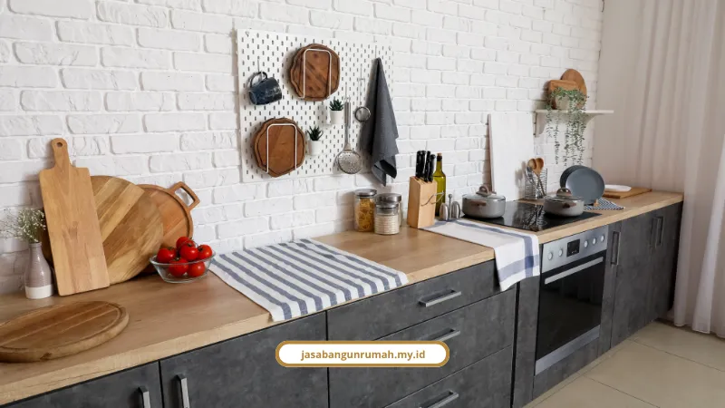

Daftar Isi
Desain dapur rumah subsidi paling praktis untuk lahan sempit adalah model satu dinding. Biaya dapur fungsional 1,5 x 6 meter sekitar Rp12,2 juta.
Di bawah ini ada 10 model dapur beserta alasan cocoknya, rincian biaya riil rumah tipe 30/60, dan catatan dari pemilik rumah yang sudah mengalami sendiri. Anggaran Rp5 juta sampai Rp15 juta masih bisa dipakai bermain.
Desain Dapur Apa yang Cocok untuk Rumah Subsidi?
Model satu dinding dan bentuk L paling cocok untuk lahan sempit, sedangkan dapur belakang semi terbuka cocok untuk sisa lahan tanah. Sepuluh pilihan berikut bisa dipadukan sesuai ukuran lahan.
1. Dapur satu dinding (single line)
- Kompor, wastafel, dan meja racik sejajar di satu sisi.
- Paling hemat tempat untuk lorong 2x1 meter atau 1,5x6 meter.
- Pakai pintu kabinet tanpa pegangan supaya permukaan rata dan bersih.
2. Dapur bentuk L di sudut ruangan
- Memakai dua dinding tegak lurus dan menghidupkan sudut yang biasanya jadi area mati.
- Menciptakan work triangle antara memasak, mencuci, dan menyimpan.
- Padukan dengan meja cor berlapis granit 60x60 cm agar awet.
3. Dapur terbuka belakang rumah
- Sisa lahan belakang jadi dapur semi terbuka, sehingga asap dan bau masakan langsung terbuang.
- Lahan yang sama bisa merangkap area cuci pakaian.
- Konsep dapur semi terbuka minimalis ini cocok untuk lahan tanah kosong di belakang rumah.
4. Dapur dengan kanopi transparan atau skylight
- Cahaya masuk maksimal di siang hari, tapi hujan tetap tertahan.
- Bahan rekomendasi: polycarbonate, UPVC, atau fiberglass.
5. Dapur ekonomis tanpa kitchen set
- Meja cor beton permanen dengan penyimpanan dinding terbuka, bebas risiko lapuk akibat lembap.
- Rak gantung, ambalan, pegboard, dan rel dinding menampung bumbu serta spatula.
- Kalau tetap ingin lemari tertutup, kitchen set aluminium anti rayap layak dilirik sebagai pengganti kayu yang rawan lapuk. Harganya belum masuk hitungan di artikel ini.
6. Dapur multifungsi dengan meja lipat dan troli
- Meja lipat tempel dinding jadi area racik atau meja makan sementara.
- Troli dapur beroda memudahkan menyimpan bumbu dan peralatan.
7. Dapur mini bar
- Meja bar ramping dan kursi stool menyekat ruangan sekaligus jadi area menyiapkan bahan makanan.
- Sisi lainnya menjadi tempat berkumpul keluarga.
8. Dapur kabinet menjulang hingga plafon
- Kabinet gantung sampai plafon menambah penyimpanan untuk alat yang jarang dipakai.
- Efeknya langit-langit terlihat lebih tinggi dan rapi.
9. Dapur industrial mini
- Semen ekspos, rak besi hitam, dan bata memberi tampilan kokoh, unik, dan tahan cuaca di area semi terbuka.
10. Dapur Skandinavia dengan warna pencerah
- Cat pencerah dipadukan kayu terang memantulkan cahaya sehingga dapur sempit terlihat lebih luas.
Warna Cat Apa yang Bikin Dapur Sempit Terlihat Luas?
Putih bersih, putih gading, abu-abu muda, greige, hijau mint, dan sage green paling efektif memperluas kesan dapur sempit. Warna-warna itu memantulkan cahaya lebih baik.
Kombinasikan dengan elemen kayu terang supaya dapur tidak terkesan kaku. Warna gelap sebaiknya dipakai seperlunya di lahan yang sudah gelap.

Berapa Biaya Bangun Dapur Rumah Subsidi Tipe 30/60?
Dapur fungsional di lahan 1,5 x 6 meter menghabiskan sekitar Rp12,2 juta. Rinciannya bahan ±Rp7.891.500 dan upah tukang Rp4.200.000 untuk 14 hari kerja dengan 1 tukang dan 1 kenek.
Rentang anggaran dapur secara umum:
- Dapur sangat sederhana tanpa keramik: sekitar Rp5 jutaan
- Dapur standar fungsional kompleks: Rp8 juta sampai Rp15 jutaan
- Upah tukang harian: Rp120.000 sampai Rp200.000 per hari per orang
- Borongan tenaga: Rp600.000 sampai Rp800.000 per m²
Ahmad Syarifudin Mahzumi, pemilik rumah subsidi tipe 30/60 di Kabupaten Bandung, mengeluarkan Rp12,2 juta itu. Ia menyarankan meja cor permanen berlapis granit 60x60 cm karena lebih awet dan hemat dibanding kitchen set penuh.
Material utamanya: hebel, semen, perekat hebel, besi cor 6 sampai 10 mm, baja ringan, satu lembar fiberglass transparan, keramik lantai 40x40 cm, backsplash 30x60 cm, wastafel, pipa PVC, dan exhaust fan.
Apa yang Sering Bikin Dapur Rumah Subsidi Bermasalah?
Perencanaan struktur yang kurang matang menjadi biang masalah, seperti genteng bocor, wastafel mampet, dan celah yang dimasuki hama. Yani Maryani, pengguna Lemon8, mengingatkan hal itu dari renovasi berbudget terbatas.
Esa Kartika mencatat estimasi awal Rp15 juta untuk dapur 3x7 meter bisa membengkak kalau belanja bahan dan hitungan upah tidak dikontrol. Desainer interior yang dikutip Suara.com menyebut untuk ruang terbatas "kuncinya adalah memaksimalkan fungsi setiap sentimeter".
Hasna Raniyah membuktikan lahan terbatas tetap bisa menjadi dapur terbuka yang rapi dan terang tanpa mengorbankan kenyamanan rumah utama.
Mau Dapur Rumah Subsidi Siap Bangun?
Kami bisa mengubah salah satu dari 10 model di atas menjadi dapur nyata, lengkap dengan RAB transparan tanpa biaya tersembunyi. Studio design & build Jasa Bangun Rumah melayani perancangan sampai konstruksi sejak 2010.
- Jasa desain interior untuk tata letak, warna, dan pencahayaan alami
- Jasa arsitek untuk merancang ruang fungsional di lahan sempit
- Jasa renovasi bangunan gedung untuk eksekusi pembangunannya
Untuk urusan renovasi rumah subsidi dari aturan sampai biaya, batas legalnya sebaiknya dipastikan lebih dulu. Konsultasi gratis lewat WhatsApp 0889-8964-3555 atau email info@jasabangunrumah.my.id.
Dapur rumah subsidi tidak harus mahal. Model satu dinding, bentuk L, atau dapur belakang semi terbuka dengan meja cor sudah cukup, dan biaya riilnya sekitar Rp12,2 juta untuk lahan 1,5 x 6 meter.
Pilih cat terang, siapkan struktur dengan benar, dan kontrol belanja bahan. Pesan konsultasi ke tim Jasa Bangun Rumah, dan desain yang cocok untuk lahan Anda bisa segera dihitung.
FAQ
Referensi
- Suara.com. (2025). 10 Desain Dapur Rumah Subsidi Minimalis, Multifungsi yang Bikin Nyaman!
- Liputan6.com. (2026). 7 Ide Halaman Belakang Rumah Subsidi untuk Dapur Terbuka, Solusi Fungsional dan Estetik.
- Mahzumi, A. S. (2025). Berapa Biaya Buat Dapur Rumah Subsidi 30/60? Ini Rincian Lengkap 2025!.